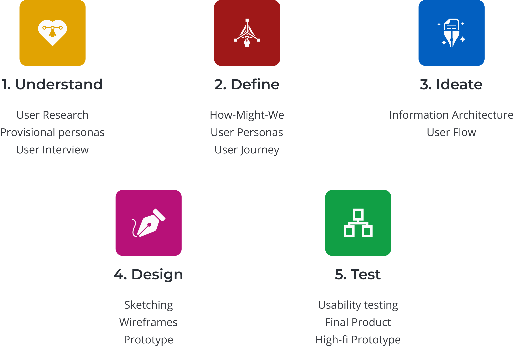
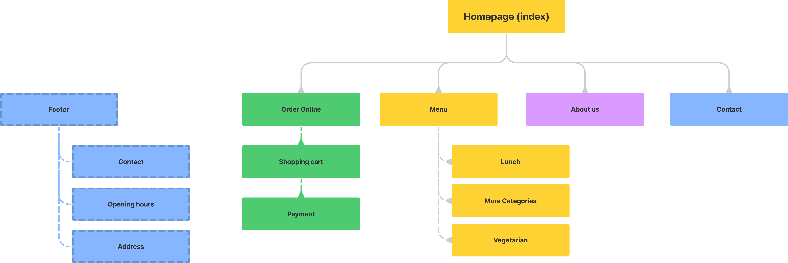
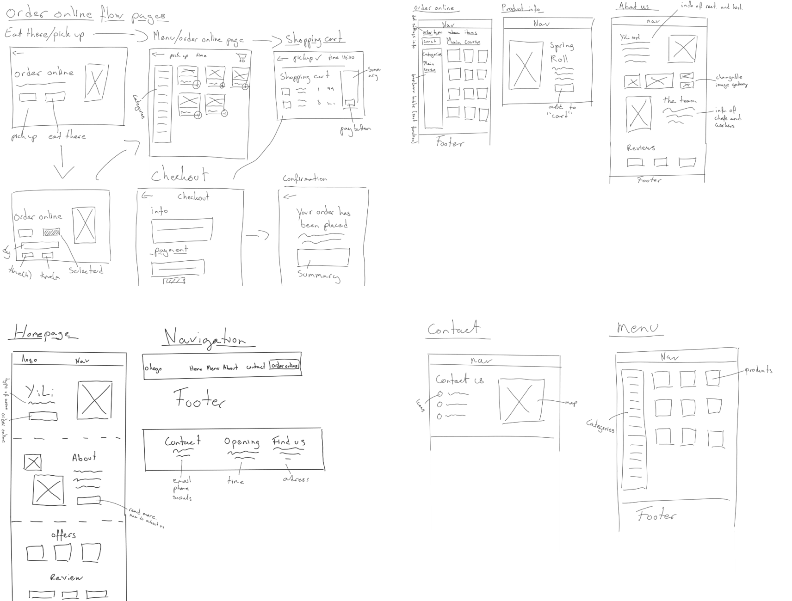

YILI RESTAURANT
YiLi, a chinese restaurant in Gothenburg, aims to enhance its online ordering process by redesigning its non-responsive website.
As the UX/UI designer for the project, my key responsibility was to conduct user research and create a responsive and easy-to-use prototype. Figma was the primary tool utilized to design and develop the prototype.
PROBLEM Statement
YiLi, a Gothenburg-based restaurant renowned for its authentic Chinese cuisine, is seeking to improve its online ordering experience. Despite offering catering and takeout services via telephone, YiLi's current non-responsive website is a barrier to online ordering. To enhance the customer experience, the project aims to redesign their website to a responsive website that allows online ordering.
Note that this project is fictional and has been created solely for the purpose of training and demonstrating UX/UI design skills.
The Goal
- Redesign YiLi's website to a responsive platform.
- Implement online ordering to improve customer satisfaction and engagement.
DESIGN PROCESS
Using a user-centered approach, the design process included five-stages: understand, define, ideate, design, and test. User research was conducted to identify customer needs and pain points. Ideas were generated and tested through wireframes and prototypes, followed by iterative improvements based on user feedback. The final result was a responsive website with an improved online ordering experience for YiLi's customers.
1. Understand: User research
To create a strong foundation for our work, conducting user research is a crucial step to understanding the problem and finding the right solutions. In order to ensure that our research is thorough and effective, it is important to develop a structured plan that outlines what to research and how to approach the research process.
Research objectives
- Gain insights into the Asian restaurant market in Gothenburg
- Identify the customers and their ordering experiences
Research objectives
- Method 1:
- Market research
- Method 2
- User interviews
Method 1: Market research
Understanding the market is crucial to gain insights about trends, customers, and competition, making it a vital starting point for research. This helps identify the specific focus for individual in-depth interviews and the questions to ask. The research involved online searches, reading articles and studies, and exploring various forums. For a detailed view of the market research and the sources used click here to see the full document.
Market environment and trends:
- Key point: The Chinese food market is a very popular, and growing industry, in the large number of restaurants in Sweden
Customers demographics:
- Key point: A significant proportion of the customer base comprises of young adults, often aged 21-35, with an annual income below 20,000, indicating their high popularity within a younger demographic
Customers Behaviour:
- Key point: Customers exhibit a positive attitude towards Chinese food, particularly in terms of health and price, and often prefer to order takeaway during night-time hours
Provisional Persona
Based on the findings from our market research, I developed provisional personas to guide our focus on the target user group. Using this information, I created three personas that over-exaggerate the characteristics of potential customers who may engage with the restaurant. I used these personas to identify suitable candidates for the user interviews.
.png)
Method 2: User Interviews
Once I had a basic understanding of the market and target audience it was time to understand the users deeper. To gain a more in-depth understanding of the target audience, a series of user interviews were conducted. The goal was to gain direct insights into users' needs and behaviours. The interviews were conducted with three individuals, including two males and one female, and consisted of 12 questions. The individuals were asked questions about their experiences both in-store and online, specifically related to YiLi or similar restaurants.
The key takeaways that will impact the design:
- Customers primarily choose restaurants based on recommendations from friends, social media, price, and most importantly, the cuisine offered.
- Providing clear information on the restaurant's price and cuisine is essential.
- Customers expect the online ordering process to be quick, easy, and straightforward, with as few steps as possible. The ordering process should be similar to other commonly used services.
- Clear communication of the size and ingredients of dishes is essential. Incorporating images and an option to "read more" for each dish can enhance the user experience.
2. define
After gathering information about our users the next step was to analyse and synthesise these observations to define the core problems. Therefore I created a series of How-Might-We Questions that will help us define the problems we aim to solve.
How-Might-We
- How can we provide clear information on the restaurant's price and cuisine to make it easier for customers to make informed decisions when choosing a restaurant?
- How can we optimize the online ordering process for ease and efficiency to reduce frustration for customers and minimize potential loss of customers?
- How can we improve communication of the size and ingredients of dishes to prevent confusion and ensure satisfactory dining experiences for customers?
User Persona
To keep our product human-centred during the ideation stage, personas were created based on the gathered data. These personas will help guide the development to a user-centred design solution.
.png)
.png)
User Journey
The user journey section will outline the steps that a user takes while interacting with the restaurant. From exploring the menu to placing an order, the user journey will highlight pain points and opportunities for improvement in the website's design.

3. Ideate
Now that we have identified our users and their journey, it's time to move into the ideation phase. This is where I generated ideas with focus on solving the users pain points and needs. By exploring a variety of ideas, I can narrow down the options and begin to develop a design solution that will meet the user needs.
Information Architecture
The first step was to create a well-organised information architecture (IA) for the website. This is important to ensure that the users can easily navigate and find the information they need. But the IA is also important as it will serve as the foundation for the user flow and the design of the user interface.
Task Flow & User Flow


4. Design
With a solid understanding of our user needs, the information architecture as well as the task & user flow, it's time to move into the design phase. In this section I will used the knowledge and insight gained from the previous stages to create an interface that aligns with our user needs and project goals.
Sketching
The first step was to explore and refine my ideas through sketching. By sketching I can conceptualise different possible solutions and easily evaluate and improve them. This way I can experiment with different layouts and concepts before digitizing the designs.
Wireframes
Once I had established how the layout could look, I added more details to the sketches by creating mid-fidelity wireframes. This allowed me to improve the layout as well as concentrate on creating a hierarchy and visual consistent before focusing on the UI-design and styling. Through the design I tried to add elements that addressed the users needs and product goals. For example, I created responsive wireframes for desktop, tablet and mobile to make sure users have a good experience on different devices.

Mid-fi Prototype
By creating prototypes for the mid-fi design I could simulates the user experience and test its usability. This allows us to identify and fix potential issues with the design before putting to much time and resources into the design (this will be discussed in the next section).

5. Test
Once the mid-fidelity prototype was created it was time to conduct usability testing to identify issues and gather feedback from the users. The findings will be used to make improvements to the design before moving on to creating the final design.
Usability testing
I conducted usability testing using the "think aloud" method to observe customers' user experience and identify any issues with the website. The testing was performed in person on four individuals, who were initially informed that the test was meant to assess the website and not their personal abilities, as well as the task they were required to complete. All participants were asked to perform 5 scenarios, while I took notes on their behaviour, difficulties, and thoughts. Below, you will find examples of the task, findings, and actions taken to improve the design.
Tasks/errands
- You are planning to have lunch with some friends and want to book a table that can accommodate all of you. Call the restaurant and reserve a table for 4 people.
- After a long day at work, you are too tired to cook. Find out how to order and pay for a meal online.
- You are searching for a restaurant that you would like to visit. Browse freely through the restaurant's menu and any other optional information to see if you want to go there and eat.
Major Findings
- User wanted to know how many items where in the shopping cart
- User wanted to know that an item was added to the shopping cart
- User wanted to know what was ordered when payment was done
- User wanted to a map that shows where the restaurant was located
Improvements
- Added a number count when items were added to the shopping cart
- Added an popup icon when the order was added to the shopping cart
- User wanted to a map that shows where the restaurant was located
- Added a clear order summary
Final Product
After conducting usability testing and identifying issues and possible improvements I moved on to creating the final product. This included implementing the improvements and focusing on the visual aspects of the website. When it comes to visual design of something new I like to take my time to explore the different options and get the information right. This can take time as I want to ensure that the design not only is visually appealing but also fits the brand and sends the right tone to the users. To achieve this, I explored styles and patterns on platforms like Dribbble and created a moodboard before incorporating them into the final design.
Moodboard

Responsive UI Design

High-fi wireframes

Prototype
Finally, I made an interactive prototype in Figma by using the high-fi wireframes that had been created.

Finishing words
In conclusion, I am happy with how the final product turned out and I have learned more about conducting user research, prototyping, and usability testing in the design process. I believe the final product will have a positive impact on the user experience for YiLi customers. While there always will be room for improvement, I believe the project has successfully achieved its goals.